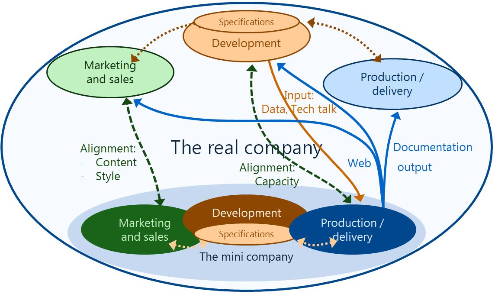

| Appendix | |
The technical documentation organization, a company within a company.
Documentation creation and maintenance can be seen as a mini production company within your company and has all elements of a regular production company. Next to the product flow from input material to sales ready product there is an information stream that makes sure the end result is according to specifications.
|
Marketing and sales |
Development / maintenance |
Production |
|---|---|---|
|
|
|
For each element of this documentation production "company" multiple solutions are possible. The marketing and development area’s are the most important sources for the goal of effective and efficient documentation.